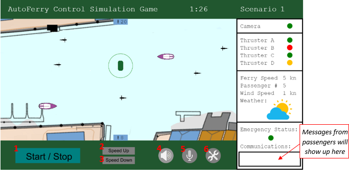

You are remotely monitoring and controlling the AutoFerry in a shore control center (SCC). Your task is to safely transport as many people as possible form one docking station across the channel. The max capacity is 12 people at a time. You decide when the ferry should start. The ferry will move in a straight line across the channel and automatically stop on the other side. The circle around the ferry indicates the status of the anti-collision system. It is green when it functions, yellow when something is detected and red when the system is impaired. The anti-collision system will make the ferry stop when an object is detected within the range of 1.5 meters from the ferry.
You can see the status of the technical system on the right side of the interface, shown below. You have three different options for controlling the ferry, and three options for notifying the passengers and surroundings. A short description of the different options follows:

Start/Stop: by pushing this button the ferry immediately stops, push the button again for starting the ferry, it will automatically reach its standard speed of 3kn.
Speed up: increase its speed by 1 kn per push
Speed down: decreases the speed by 1kn per push
Signal the surroundings by sound from an air horn. Length of blast depending on how long you push the button.
Communicate to passenger: Push this button and record your message
Maintenance needed! Push this button to notify the maintenance crew of needed action. The ferry will stop at the next dock for repair, and passengers will be automatically notified that the ferry is out of service.
Control rules:
Yield for boats and kayakers from the right! (compliance with COLREG rules)
Stop ferry if the anti-collision system fails (if the circle around the ferry turns red).
If necessary, warn other boats by sound signal. The circle around the boat turns yellow when it detects objects 5m from the ferry.
Rules for startup:
Do not start the ferry if the load exceeds 12 passengers
Do not start the ferry if the wind speed is above 15kn
In case of technical failures and impaired systems:
The ferry shall not operate with an impaired anti-collision system
The ferry shall not operate with two or more impaired thrusters (yellow status).
The ferry shall not operate with a failed thruster (red status)
In these cases notify the maintenance crew and stop at next docking station.
The ferry can operate with one impaired thruster (yellow status). In this case, notify the maintenance crew.